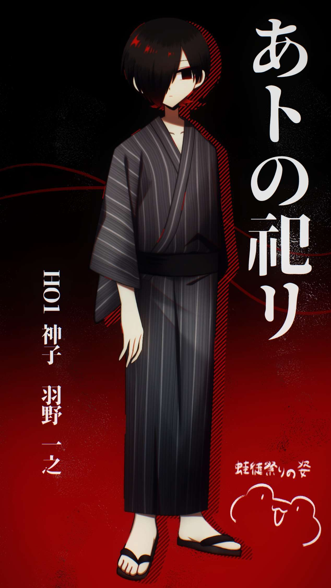

立ち絵

プロフィール
| 年齢 | 18歳 |
|---|---|
| 性別 | 男 |
| 身長 | 180 cm |
| 誕生日 | 11月1日 |
| 一人称/二人称 | 俺/(名前)、貴方、君 |
| 好きなもの | 友達、卵焼き、カルパス、しょっぱい系の食べもの、恋バナ |
| 嫌いなもの | 大葉、ズッキーニ、柳田孝 |
| 参加シナリオ | あとの祀り |
裏プロフィール
| 怖いもの | あとまつメンバー(友達)がいなくなること |
|---|---|
| 好きなもの | 気持ちのいいセックス(優位感)、えっちな本(男子高校生だからね‼️) |
| 隠している癖 | 暇な時に自分の前髪で遊ぶ、前髪で隠れている方の目を使ってウィンクの練習(まだできない) |
| 嫌いなもの | 柳田孝とのセックス？、火事(怖い) |
関わりのある人
サンプルボイス
「俺は羽野一之。…よろしく」
「うん、いいよ。俺でよかったら」
「いいの？」
裏サンプルボイス
Qカエル好き？
「え…別に、普通」
「え…別に、普通」
夜伽の時ボイス
「…俺が嫌？やっぱり」
「…すみません…俺となんて、やりたくないですよね」
「…俺が嫌？やっぱり」
「…すみません…俺となんて、やりたくないですよね」
イメージソング
🎵 イメソン 3：ニャン / MARETU feat.初音ミク

ここに選曲理由やコメントを入力してください。